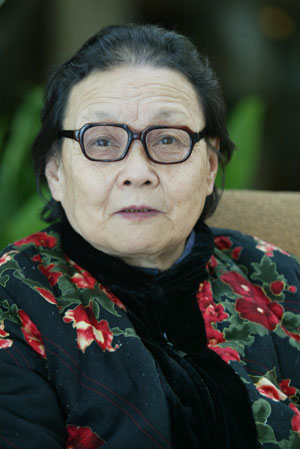
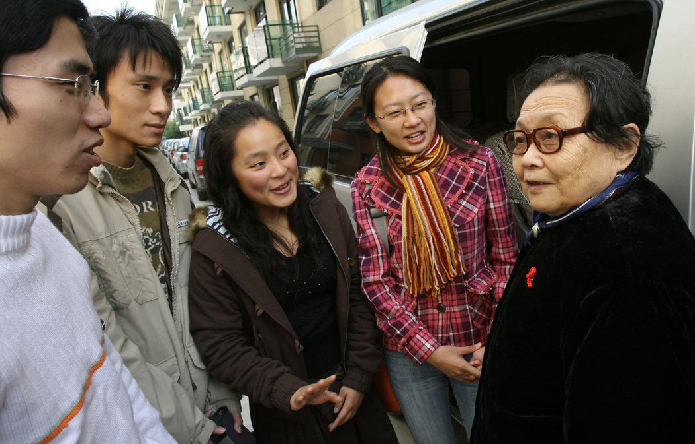

“知识可以改变命运，艾滋病教育可以拯救生命。” ——高耀洁
初识艾滋病
高耀洁，中国著名的艾滋病防治活动家，她的职业生涯最初是作为一名妇产科医生在河南省郑州市中医院工作。然而，1990年代初，她的注意力被转移到了一个严重的公共健康问题上——艾滋病。当时，中国农村地区因非法血液交易活动频繁而导致艾滋病疫情爆发，高耀洁毅然决然地投身于艾滋病的防治和宣传工作中。
调查与揭露
通过深入的调查和走访，高耀洁逐渐揭露了一系列由于非法卖血导致的艾滋病传播案例。在河南省的一些贫困地区，许多村民为了生活需要，参与到了非法的血液交易中。这些地方的血站往往重复使用针具，缺乏基本的消毒程序，极大地增加了艾滋病毒的传播风险。高耀洁通过实地走访，记录了大量感染者的案例，她的工作初期受到了极大的阻力，甚至面临生命威胁。
公共卫生倡导与教育
除了揭露和报道，高耀洁还积极从事艾滋病的预防教育工作。她四处奔走于农村和城市，向公众讲解艾滋病的传播方式和预防措施，为艾滋病患者提供咨询和支持。她的教育活动不仅限于患者，更广泛地影响到了社会公众和政策制定者。
国内外的认可
高耀洁的努力最终得到了国内外的广泛认可。2001年，她因其在艾滋病防治领域的卓越贡献被授予联合国人口奖。2003年，她被评为“感动中国年度人物”，这一荣誉不仅表彰了她的个人勇气和执着，更是对她在艾滋病防治领域成就的国家级认可。
面临挑战与争议
尽管获得了诸多荣誉，高耀洁在推进艾滋病防治工作中也面临着重重挑战。她的行动经常受到当地政府的阻挠，有时甚至遭遇政治和法律上的压力。但她始终坚持自己的信念，不畏艰难，继续为艾滋病患者发声，争取他们的权益。
晚年生活与遗产
在经历了长期的努力和挑战后，高耀洁于2009年选择移居美国。虽然离开了中国，但她依然关注着中国乃至全球的艾滋病防治情况，不时通过各种渠道对中国的公共卫生政策提出建议和批评。她的工作和影响力激励了无数人投身于艾滋病防治和公共卫生事业。
高耀洁的一生是对抗疾病和不公的斗争，她的名字成为了中国乃至世界艾滋病防治领域的一个重要符号。她的故事不断提醒我们，一个人的努力可以触动整个社会，改变无数人的命运。她留下的遗产，是对未来公共卫生工作者的持续激励，也是对全人类的深刻启示。
结语
高耻者通过自己的实际行动，证明了坚持与勇气的力量，无论面对多大的困难与挑战，都未曾退缩。她的故事将永远激励着每一个为了正义与健康而奋斗的人。
